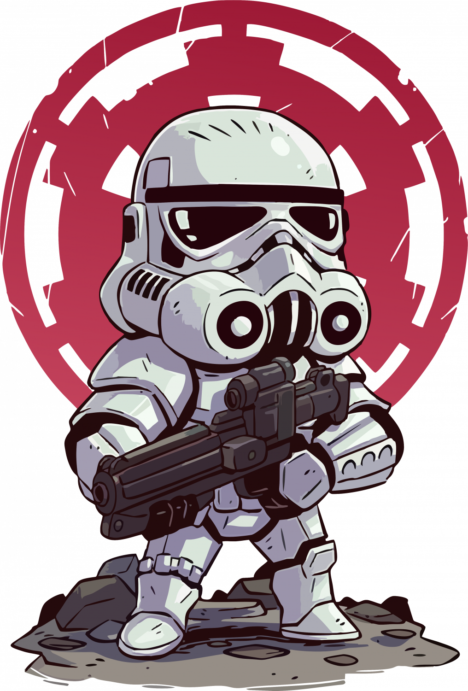
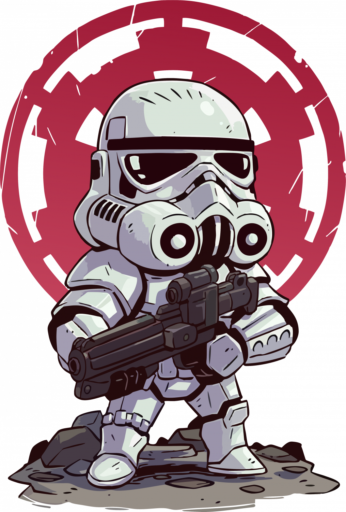
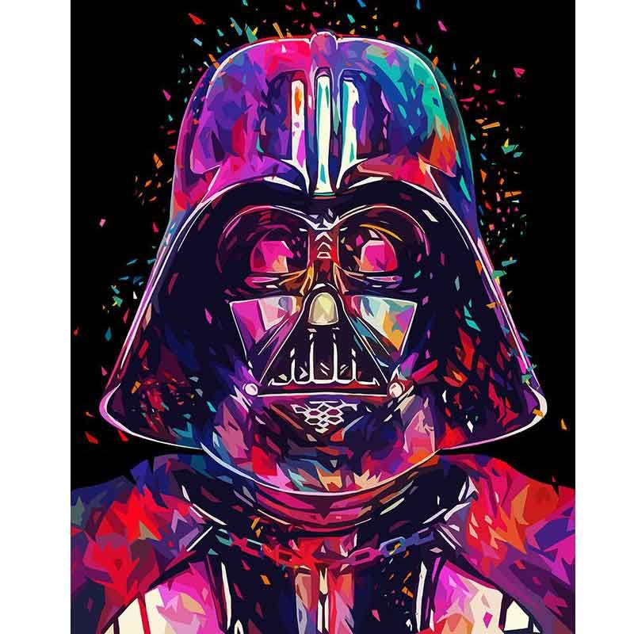

Ещё в студенческие годы Джордж Лукас задумывал снять героическую космическую фантазию с космическими перестрелками в стиле фантастических комиксов и киносериалов, выходивших в США в 1940-е — 1950-е годы и «отмерших» к концу 1960-х. Основное влияние на «Звёздные войны» оказали космические оперы вроде сериала «Флэш Гордон» и франшизы о Баке Роджерсе, а также их прародитель — литературная серия Эдгара Берроуза «Джон Картер на Марсе». Сюжетно оригинальная трилогия «Звёздных войн» частично восходит к самурайским фильмам Акиры Куросавы (большей частью «Трём негодяям в скрытой крепости»). Также на сценарий фильма повлияли многие другие фантастические произведения, такие как роман «Космический жаворонок» основателя жанра космооперы Эдварда Элмера Смита и роман «Дюна» Фрэнка Герберта.[1][2] В мае 1971 года в Каннах Лукас подписал со студией United Artists контракт на съёмку фильма «Звёздные войны», а 1 августа того же года название «The Star Wars» зарегистрировано Американской ассоциацией кинокомпаний. Началом истории «Звёздных войн» принято считать 1976 год. Именно тогда появилась одноимённая книга-новеллизация А. Д. Фостера (в издании указано авторство лишь Джорджа Лукаса), рассказывающая о событиях «Эпизода IV: Новая надежда». Продюсеры 20th Century Fox, опасаясь провала фильма в прокате, решили выпустить книгу раньше, чтобы оценить её успешность. В 1977 году на конгрессе Всемирного сообщества научной фантастики Джордж Лукас получил специальную премию «Хьюго»[3] за этот роман. Первый фильм вышел 25 мая 1977 года под названием «Звёздные войны». Фильм имел огромный кассовый успех, что фактически спасло компанию 20th Century Fox от угрожавшего ей тогда банкротства. Когда сомнения в окупаемости проекта отпали, первый фильм получил подзаголовок «Новая надежда», и вскоре за ним появились два продолжения — «Империя наносит ответный удар» (режиссёр Ирвин Кершнер, 1980) и «Возвращение джедая» (режиссёр Ричард Маркуанд, 1983). С самого начала отличительной чертой франшизы «Звёздные войны» стало массовое производство сопутствующих товаров, таких как пластмассовые фигурки персонажей, технических средств из фильмов и других игрушек, футболок с символикой фильма и т. д. Успешные маркетинговые ходы Джорджа Лукаса позволяли поддерживать у публики высокий уровень интереса к «Звёздным войнам» в перерывах между выходами фильмов. Доходы от продажи этих товаров превосходят доходы от проката самих фильмов.[4] Ту же цель преследовало создание фильмов-спин-оффов: помимо признанного провальным «Праздничного спецвыпуска» (1978), были сняты телефильмы «Караван смельчаков. Приключения эвоков» (1984) и «Эвоки. Битва за Эндор» (1985), а также мультсериалы «Эвоки» (1985—1986) и «Дроиды» (1985—1986). В 1980-х годах была выпущена серия компьютерных игр для различных платформ по мотивам фильмов трилогии. Компания «West End Games» выпускала настольные ролевые игры по «Звёздным войнам». В течение всех лет существования важной составляющей франшизы были комиксы. Основными издателями комиксов «Звёздных войн» были компании Marvel Comics (1977—1987 и с 2015) и Dark Horse Comics (1991—2014), а также газеты Los Angeles Times Syndicate (1979—1984) и Watertown Daily Times (1979—1984). После спада интереса к франшизе в конце 1980-х годов последовал новый всплеск интереса, связанный с выходом в издательстве «Bantam Spectra» романов «Трилогии Трауна» Тимоти Зана. Успех романов породил выпуск в свет романов десятков различных авторов: в последующие годы ежегодно публиковалось более 10 книг по этой вселенной[5]. Второй составляющей роста интереса стал выпуск ряда успешных компьютерных игр, прежде всего серии симуляторов «X-wing» и шутеров серии Dark Forces/Jedi Knight. В 1997 году, 20 лет спустя после выхода первого фильма, оригинальная трилогия была переработана с добавлением компьютерных спецэффектов и выпущена в повторный прокат. В повторном прокате фильмы собрали, соответственно, 256,5 млн, 124,2 млн и 88,7 млн долларов[6]. В 1999 году на экраны был выпущен фильм «Звёздные войны. Эпизод I: Скрытая угроза» (режиссёр Джордж Лукас), который положил начало новой трилогии — предыстории оригинальной. Затем вышли ещё два фильма: «Звёздные войны. Эпизод II: Атака клонов» и «Звёздные войны. Эпизод III: Месть ситхов» в 2002 и 2005 соответственно. В 2000-е годы вышли мультфильм «Звёздные войны: Войны клонов» (режиссёр Дэйв Филони, 2008) и мультсериал «Войны клонов» (2008, каналы Cartoon Network и Netflix), продолжавший его. В 2014 году стартовал мультсериал «Звёздные войны: Повстанцы» (канал Disney XD), заменивший «Войны клонов». Всего в 2014—2018 годах вышло 4 сезона «Повстанцев», после этого стало известно, что «Войны клонов» спустя пять с лишним лет вернутся на седьмой и заключительный сезон на канале Disney+. В январе 2012 года Джордж Лукас заявил о том, что больше не будет принимать непосредственное участия в создании фильмов саги «Звёздные войны». В октябре 2012 года было объявлено, что The Walt Disney Company покупает Lucasfilm и будет заниматься дальнейшей дистрибуцией фильмов (Lucasfilm Ltd. как подразделение The Walt Disney Company продолжил отвечать за производство фильмов). В конце 2012 года был анонсирован седьмой фильм, являющийся продолжением VI эпизода. Фильм «Звёздные войны: Пробуждение силы» (режиссёр Джей Джей Абрамс) вышел в прокат в декабре 2015 года. 10 декабря 2016 года состоялась премьера первого полнометражного фильма, не являющегося «Эпизодом» основной саги — «Изгой-один. Звёздные войны: Истории» (режиссёр Гарет Эдвардс). Действие в этом фильме происходило непосредственно перед событиями «Эпизода IV». В марте 2015 года был анонсирован «Эпизод VIII: Последние джедаи» (режиссёр Райан Джонсон)[7], его мировая премьера состоялась 8 декабря 2017 года. 10 мая 2018 года состоялась премьера второго спин-оффа «Звёздных войн» «Хан Соло. Звёздные войны: Истории». Фильм стал наименее успешным по кассовым сборам в истории саги. В ноябре 2019 года на канале Disney+ состоялась премьера игрового сериала «Мандалорец» (создатель Джон Фавро). Действие сериала происходит между событиями VI и VII эпизодов саги. В декабре 2019 года состоялась премьера фильма «Скайуокер. Восход» заключительного эпизода третьей трилогии саги (режиссёр Джей Джей Абрамс). В мае 2019 года было объявлено о предстоящем выходе ещё одной трилогии. Её эпизоды выйдут в 2022, 2024 и 2026 годах[8].
21.02.2020
Star Wars
Один из важнейших элементов вселенной «Звёздных войн» — это «Сила», вездесущее энергетическое поле, подконтрольное живым существам, достигшим определённого духовного развития (причём уровень контроля над Силой различен в зависимости от врождённых способностей и тренировок).
21.02.2020
Star Wars
Сага приобрела статус культовой
21.02.2020
Star Wars
2018 — Звёздные войны: Последние джедаи (0 побед, 4 номинации)
|  | |||
|---|---|---|---|